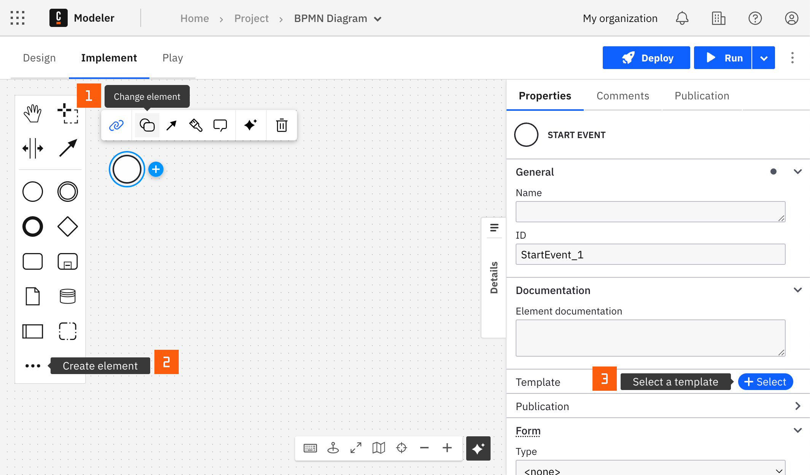

Kafka Connector
Kafka Producer Connector
The Kafka Producer Connector is an outbound Connector that allows you to connect your BPMN service with Kafka to produce messages.
Prerequisites
To use the Kafka Producer Connector, you need to have a Kafka instance with configured bootstrap server. Use Camunda secrets to avoid exposing your sensitive data as plain text. Follow our documentation on managing secrets to learn more.
Create a Kafka Producer Connector task
A Connector can be applied to a task or an event using the append menu. Access the append menu using any of the three methods below:
- From the canvas: Select an element and click the Change element icon to change an existing element, or use the append feature to add a new element to the diagram.
- From the properties panel: Navigate to the Template section and click Select.
- From the side palette: Click the Create element icon.

Once you have applied a Connector to your element, follow the configuration steps or read our guide on using Connectors to learn more.
Make your Kafka Producer Connector for publishing messages executable
To make your Kafka Producer Connector for publishing messages executable, take the following steps:
- (Optional) Set the relevant credentials in the Authentication section. For example,
{{secrets.MY_KAFKA_USERNAME}}. See the relevant appendix section to find more about Kafka secure authentication. - In the Kafka section, select the serialization type for your messages. Choose Default (JSON) for JSON serialization or Avro (experimental) for Avro serialization. Read more about Kafka Avro serialization.
- In the Kafka section, set the URL of bootstrap server(s); comma-separated if more than one server required.
- In the Kafka section, set the topic name.
- (Optional) In the Kafka section, fill out the field Headers to set producer configuration values. Only
UTF-8strings are supported as header values. - (Optional) In the Kafka section, fill out the field Additional properties to set producer configuration values. See the list of supported configurations at the official Kafka documentation page. Also check preconfigured values for the Kafka Producer Connector in the relevant appendix section.
- In the Message section, set the Key and the Value that will be sent to Kafka topic.
- (Optional for Avro (experimental)) In the Avro schema field, input the schema that defines the message structure. Ensure this schema is in your Avro schema registry.
Avro serialization
Use Avro serialization with caution, as this is an experimental feature. Functionality may not be comprehensive and could change.
The Kafka Producer Connector supports Avro serialization, which offers a compact, fast, and binary data exchange format for Kafka messages. Avro relies on schemas for serialization and deserialization. When using Avro, each message is serialized according to a specific schema written in JSON format. This schema defines the structure of the Kafka message, ensuring the data conforms to a predefined format and enabling schema evolution strategies.
For more detailed information on Kafka Avro serialization, you may refer to the official Kafka documentation and official Apache Avro documentation.
Example Avro schema and data
Avro schema:
{
"doc": "Sample schema to help you get started.",
"fields": [
{
"name": "name",
"type": "string"
},
{
"name": "age",
"type": "int"
},
{
"name": "emails",
"type": {
"items": "string",
"type": "array"
}
}
],
"name": "sampleRecord",
"namespace": "com.mycorp.mynamespace",
"type": "record"
}
Kafka message
- Key :
employee1 - Value :
{
"name": "John Doe",
"age": 29,
"emails": ["johndoe@example.com"]
}
Kafka Producer Connector response
The Kafka Producer Connector returns metadata for a record that has been acknowledged by the Kafka instance.
The following fields are available in the response variable:
timestamp: the timestamp of the messageoffset: message offsetpartition: message partitiontopic: topic name
You can read about these fields at the official Kafka documentation page.
You can use an output mapping to map the response:
- Use Result Variable to store the response in a process variable. For example,
myResultVariable. - Use Result Expression to map fields from the response into process variables. For example:
= {
"messageAcknowledgedAt": response.timestamp
}
Appendix & FAQ
What mechanism is used to authenticate against Kafka?
If the fields Username and Password are not empty, by default the Kafka Producer Connector enables the credentials-based SASL SSL authentication and the following properties are set:
sasl.jaas.config=org.apache.kafka.common.security.plain.PlainLoginModule required username='<Your Username>' password='<Your Password>';
security.protocol=SASL_SSL
sasl.mechanism=PLAIN
If any of the field is not populated, you have to configure your security method in respect to your Kafka configuration. You can do so via the field Additional properties.
What are default Kafka Producer client properties?
- Authentication properties (only if both Username and Password are not empty):
sasl.jaas.config=org.apache.kafka.common.security.plain.PlainLoginModule required username='<Your Username>' password='<Your Password>';
security.protocol=SASL_SSL
sasl.mechanism=PLAIN
- Bootstrap server property:
bootstrap.servers=<bootstrap server(s) from BPMN>
- Message properties:
key.serializer=org.apache.kafka.common.serialization.StringSerializer
value.serializer=org.apache.kafka.common.serialization.StringSerializer
- Miscellaneous properties:
session.timeout.ms=45000
client.dns.lookup=use_all_dns_ips
acks=all
delivery.timeout.ms=45000
What is the precedence of client properties loading?
Properties loading consists of three steps:
- Construct client properties from the BPMN diagram: authentication, bootstrap server, message properties.
- Load miscellaneous properties.
- Load and override properties from the field Additional properties.
How do I set or override additional client properties?
The following example sets a new client property client.id and overrides SASL mechanism to SCRAM SHA-256 instead of plain text:
= {
"client.id":"MyDemoClientId",
"sasl.mechanism":"SCRAM-SHA-256"
}
Kafka Consumer Connector
The Kafka Consumer Connector allows you to consume messages by subscribing to Kafka topics and map them your BPMN processes as start or intermediate events.
Prerequisites
To use the Kafka Consumer Connector, you need to have a Kafka instance with configured bootstrap server. Use Camunda secrets to avoid exposing your sensitive data as plain text. Follow our documentation on managing secrets to learn more.
Create a Kafka Consumer Connector task
- Add a Start Event or an Intermediate Event to your BPMN diagram to get started.
- Change its template to a Kafka Consumer.
- Fill in all required properties.
- Complete your BPMN diagram.
- Deploy the diagram to activate the Kafka consumer.
Make your Kafka Consumer Connector executable
To make your Kafka Consumer Connector executable, take the following steps:
- In the Authentication section, select the Authentication type.
- (If you selected Credentials as the Authentication type) In the Authentication section, set the relevant credentials. For example,
{{secrets.MY_KAFKA_USERNAME}}. Refer to the relevant appendix section to find more about Kafka secure authentication. - In the Kafka section, select the serialization type for your messages. Choose Default (JSON) for JSON serialization or Avro (experimental) for Avro serialization. Read more about Kafka Avro serialization.
- In the Kafka section, set the URL of bootstrap server(s); comma-separated if more than one server required.
- In the Kafka section, set the topic name.
- (Optional) In the Kafka section, fill out the field Additional properties to set consumer configuration values. See the list of supported configurations at the official Kafka documentation page. Additionally, check preconfigured values for the Kafka Consumer Connector in the relevant appendix section.
- In the Kafka section, you can set the Offsets for the partition. The number of offsets specified should match the number of partitions on the current topic.
- In the Kafka section, you can set the Auto offset reset which tells the Connector what strategy to use when there is no initial offset in Kafka or if the specified offsets do not exist on the server.
- (For Avro (experimental)) In the Message deserialization section, input the schema that defines the message structure into the Avro schema field.
- In the Activation section, you can set the Activation Condition. This condition filters if the process step triggers when a Kafka message is consumed. For example,
=(value.itemId = "a4f6j2")will only trigger the start event or continue the catch event if the Kafka message has a matching itemId in the incoming message payload. Leave this field empty to trigger your process every time.
When using the Kafka Consumer Connector with an Intermediate Catch Event, fill in the Correlation key (process) and Correlation key (payload).
- Correlation key (process) is a FEEL expression that defines the correlation key for the subscription. This corresponds to the Correlation key property of a regular Message Intermediate Catch Event.
- Correlation key (payload) is a FEEL expression used to extract the correlation key from the incoming message. This expression is evaluated in the Connector Runtime and the result is used to correlate the message.
For example, given that your correlation key is defined with myCorrelationKey process variable, and the value contains "value":{"correlationKey":"myValue"}, your correlation key settings will look like this:
- Correlation key (process):
=myCorrelationKey - Correlation key (payload):
=value.correlationKey
You can also use the key of the message to accomplish this in the Correlation key (payload) field with =key.
Learn more about correlation keys in the messages guide.
Example Avro schema and data
If the expected Kafka message looks like this:
Kafka message
- Key :
employee1 - Value :
{
"name": "John Doe",
"age": 29,
"emails": ["johndoe@example.com"]
}
Then the corresponding Avro schema to describe this message's structure would be:
Avro schema:
{
"doc": "Sample schema to help you get started.",
"fields": [
{
"name": "name",
"type": "string"
},
{
"name": "age",
"type": "int"
},
{
"name": "emails",
"type": {
"items": "string",
"type": "array"
}
}
],
"name": "sampleRecord",
"namespace": "com.mycorp.mynamespace",
"type": "record"
}
This schema defines a structure for a record that includes a name (string), an age (integer), and emails (an array of strings), aligning with the given Kafka message's value format.
Activate the Kafka Consumer Connector by deploying your diagram
Once you click the Deploy button, your Kafka Consumer will be activated and starts consuming messages from the specified topic.
Kafka Consumer Connector response
The Kafka Consumer Connector returns the consumed message.
The following fields are available in the response variable:
key: The key of the message.value: The value of the message.rawValue: The value of the message as a JSON string.
You can use an output mapping to map the response:
- Use Result variable to store the response in a process variable. For example,
myResultVariable. - Use Result expression to map fields from the response into process variables. For example:
= {
"itemId": value.itemId
}
Appendix & FAQ
What mechanism is used to authenticate against Kafka?
If you selected Credentials as Authentication type and the fields Username and Password are not empty, by default the Kafka Consumer Connector enables the credentials-based SASL SSL authentication and the following properties are set:
sasl.jaas.config=org.apache.kafka.common.security.plain.PlainLoginModule required username='<Your Username>' password='<Your Password>';
security.protocol=SASL_SSL
sasl.mechanism=PLAIN
If any of the field is not populated, you must configure your security method in respect to your Kafka configuration. You can do so via the field Additional properties.
What are default Kafka Consumer client properties?
- Authentication properties (only if both Username and Password are not empty):
sasl.jaas.config=org.apache.kafka.common.security.plain.PlainLoginModule required username='<Your Username>' password='<Your Password>';
security.protocol=SASL_SSL
sasl.mechanism=PLAIN
- Bootstrap server property:
bootstrap.servers=<bootstrap server(s) from BPMN>
- Message properties:
key.deserializer=org.apache.kafka.common.serialization.StringDeserializer
value.deserializer=org.apache.kafka.common.serialization.StringDeserializer
- Miscellaneous properties:
session.timeout.ms=45000
client.dns.lookup=use_all_dns_ips
acks=all
group.id=kafka-inbound-connector-{{bpmnProcessId}}
enable.auto.commit=false
What is the precedence of client properties loading?
Properties loading consists of three steps:
- Construct client properties from the BPMN diagram: authentication, bootstrap server, message properties.
- Load miscellaneous properties.
- Load and override properties from the field Additional properties.
How is the message payload deserialized?
Kafka messages usually use JSON format, therefore we first try to deserialize it as a JsonElement. If this fails (e.g. because of wrong format) we use the String representation of the original raw value. For convenience, we always store the original raw value as String in a different attribute.
The deserialized object structure:
{
key: "String"
rawValue: "String"
value: {}
}
When is the offset committed? What happens if the Connector execution fails?
The following outcomes are possible:
- If Connector execution is successful and Activation condition was met, the offset is committed.
- If Activation condition was not met, the offset is also committed to prevent consuming the same message twice.
- If Connector execution fails due to an unexpected error (e.g. Zeebe is unavailable), the offset is not committed.
What lifecycle does the Kafka Consumer Connector have?
The Kafka Consumer Connector is a long-running Connector that is activated when the process is deployed and deactivated when the process is un-deployed or overwritten by a new version.